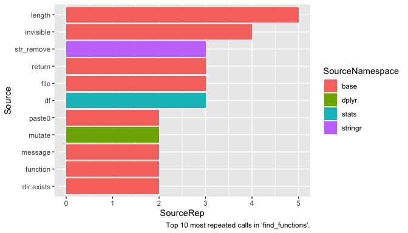

The goal of functiondepends is to allow for tidy exploration of unstructured codebase without evaluation of code.
Installation
One can install functiondepends from CRAN:
install.packages("functiondepends")or development version from GitHub:
# install.packages("devtools")
devtools::install_github("WelcomeToMyVirtualHome/functiondepends")Examples
library(functiondepends)
# Create environment for loaded functions
envir <- new.env()
# Search recursively current directory
functions <- find_functions(".", envir = envir, recursive = TRUE)
functions
#> Level1 Level2 Function
#> 1 R find-dependencies.R find_dependencies
#> 2 R find-functions.R is_function
#> 3 R find-functions.R get_function_name
#> 4 R find-functions.R is_assign
#> 5 R find-functions.R find_functionsSearch for dependencies of function find_functions within parsed functions:
dependency <- find_dependencies("find_functions", envir = envir, in_envir = TRUE)
dependency
#> # A tibble: 2 x 5
#> Source SourceRep SourceNamespace Target TargetInDegree
#> <chr> <int> <chr> <chr> <int>
#> 1 get_function_name 1 user-defined find_functions 2
#> 2 is_function 1 user-defined find_functions 2Note that SourceNamespace column has value user-defined as the functions are searched within source of the package.
Search for all dependencies of find_functions function:
library(ggplot2)
library(dplyr)
dependency <- find_dependencies("find_functions", envir = envir, in_envir = FALSE)
dependency %>%
slice_max(SourceRep, n = 10) %>%
mutate(Source = reorder(Source, SourceRep)) %>%
ggplot(aes(x = Source, y = SourceRep, fill = SourceNamespace)) +
geom_col() +
coord_flip() +
labs(caption = "Top 10 most repeated calls in 'find_functions'.")
Note that name df is often used to store object of type data.frame. df is also a name of F distribution density function from stats package. If you suspect that given function ought not to use a specific package, see the source code of function to check the context. To do so, one can execute find_dependencies function with add_info argument set to TRUE.
library(tidyr)
dependency <- find_dependencies("find_functions", envir = envir, in_envir = FALSE, add_info = TRUE)
dependency %>%
filter(SourceNamespace == "stats") %>%
select(Source, SourcePosition, SourceContext) %>%
unnest(c(SourcePosition, SourceContext))
#> # A tibble: 5 x 3
#> Source SourcePosition SourceContext
#> <chr> <dbl> <chr>
#> 1 df 6 " df <- purrr::map_dfr(sourceFiles, ~{"
#> 2 df 15 " source_name <- basename(df$Path)"
#> 3 df 17 " df <- df %>% dplyr::mutate(Path = stringr::str_rem~
#> 4 df 18 " paths <- stringr::str_split(df$Path, \"/|\\\\\\\\\~
#> 5 df 20 " tidyr::separate(df, \"Path\", into = paste0(\"Leve~One can see that indeed df is not a call to function stats::df.
dependency <- find_dependencies(unique(functions$Function), envir = envir, in_envir = FALSE)
dependency %>%
distinct(Target, TargetInDegree) %>%
mutate(Target = reorder(Target, TargetInDegree)) %>%
ggplot(aes(x = Target, y = TargetInDegree)) +
geom_col() +
coord_flip() +
labs(caption = "Functions with most function calls.")
dependency <- find_dependencies(unique(functions$Function), envir = envir, in_envir = FALSE)
dependency %>%
group_by(SourceNamespace) %>%
tally(name = "Count") %>%
slice_max(Count, n = 10) %>%
mutate(SourceNamespace = reorder(SourceNamespace, Count)) %>%
ggplot(aes(x = SourceNamespace, y = Count)) +
geom_col() +
coord_flip() +
labs(caption = "Top 10 used namespaces.")See which user-defined functions depend most on other user-defined functions within searched codebase.
dependency <- find_dependencies(unique(functions$Function), envir = envir, in_envir = TRUE)
dependency %>%
distinct(Target, TargetInDegree) %>%
arrange(-TargetInDegree)
#> # A tibble: 5 x 2
#> Target TargetInDegree
#> <chr> <dbl>
#> 1 find_functions 2
#> 2 is_function 1
#> 3 find_dependencies 0
#> 4 get_function_name 0
#> 5 is_assign 0
library(igraph)
edges <- dependency %>%
select(Source, Target) %>%
filter(!is.na(.))
vertices <- unique(c(dependency$Source, dependency$Target))
vertices <- vertices[!is.na(vertices)]
g <- graph_from_data_frame(d = edges, vertices = vertices)
deg <- degree(g, mode = "in")
V(g)$size <- deg * 10 + 5
V(g)$label.cex <- (degree(g, mode = "in", normalized = TRUE) + 1)
plot(
g,
vertex.color = "grey",
edge.color = "grey",
edge.arrow.size = .4,
main = "Functions dependency graph"
)
dependency <- find_dependencies(unique(functions$Function), envir = envir, in_envir = FALSE)
edges <- dependency %>%
select(Source, Target) %>%
filter(!is.na(.))
vertices <- unique(c(edges$Source, edges$Target))
g <- graph_from_data_frame(edges)
deg <- degree(g, mode = "in")
V(g)$size <- deg
V(g)$label.cex <- (degree(g, mode = "in", normalized = TRUE) + 1) / 1.8
plot(
g,
vertex.color = "grey",
edge.color = "grey",
edge.arrow.size = .4,
main = "Full functions dependency graph"
)